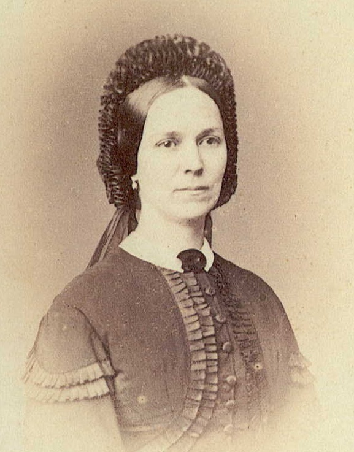
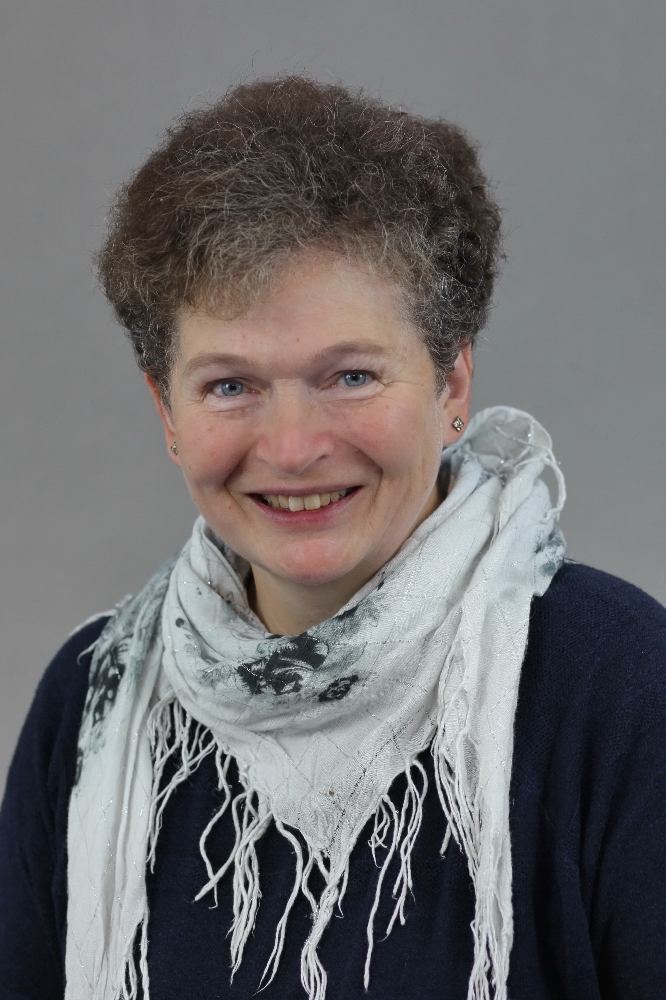

Authors
Samah Jabr

Samah Jabr, born in 1976 in East Jerusalem, is a psychiatrist and writer. She is the author of Derrière les fronts, which was published in France in 2017 by Premiers Matins de Novembre and Hybrid Pulse. Drawing on her clinical observations and an updated discourse by Frantz Fanon, she describes daily life in occupied Palestine and invites us to reflect on mental health, colonialism and human rights. [Picture: Alexandra Dols]
Nawal El Saadawi

Nawal El Saadawi was an Egyptian writer and human rights activist. Originally a doctor and psychiatrist, she wrote about female genital mutilation and more generally about the role of women in Islam and Egyptian society. Her 1972 publication al-Mar'a wa-l-ǧins ("Woman and Sex", first German translation published by Gamila in 2024) led to a publication ban in Egypt and the dismissal of her then position as Director of Health Education at the Egyptian Ministry of Health. Nawaal El Saadawi published numerous novels, short stories, plays, memoirs, essays and political writings. She died in Cairo in March 2021 at the age of 89. [Picture: Bengt Oberger]
Helga Baumgarten

Helga Baumgarten (born 1947) is a German political scientist and Middle East expert. She holds a doctorate from the Free University of Berlin, teaches at Birzeit University in the West Bank and researches the Israeli-Palestinian conflict, the role of Palestinian movements, the dynamics of occupation and the political history of the Middle East. She has published numerous works on these topics and is known for her in-depth analysis and academic engagement. [Picture: Stephan Röhl]
André Léo
André Léo (born Victoire Léodile Béra in 1824) was a French writer, journalist and political activist. She wrote numerous novels and stories as well as articles and political writings. In her work, the feminist author dealt with social issues such as the emancipation of women, decent working conditions and the separation of church and state (on the latter topic, see "Schneiden wir das Seil durch!", published by Gamila in 2022). André Léo spent large parts of her life in French-speaking Switzerland and Ticino and cultivated relationships with political and literary figures such as Victor Hugo and Mikhail Bakunin, whose "Alliance internationale de la démocratie socialiste" she joined in 1871. In 1881, Léo returned to France, where she continued to work as a writer and remained politically active for the next two decades. She died in 1900 at the age of 75 in her apartment in Paris.
Translators
Doaa Elalfy

Doaa Elalfy originally comes from Mansoura in Egypt. After graduating in pharmacology, she first worked as a pharmacist, later as a pharmaceutical inspector and was also involved in helping women from disadvantaged backgrounds. In this context, she repeatedly came into contact with female genital mutilation. After a second degree in ancient history, Doaa Elalfy is currently working on her doctorate on the history of medical training in Greco-Roman Egypt.
Sophie Haesen
Sophie Haesen wanted to translate books and travel from a very early age. She studied Romance languages and literature, medicine, Middle Eastern studies and history and gained a doctorate in medical ethics. In addition to her family work, she was active in various fields and retains a keen interest in a wide range of topics to this day. Her travels on all continents were also formative.
Graphic Designers
Enso Aellig

Enso Aellig (*1995) lives in Neuchâtel and works as a travel consultant, freelance graphic designer as well as layout designer for Gamila. He carries out all media design work for the publishing house and sometimes also editorial and proofreading work.